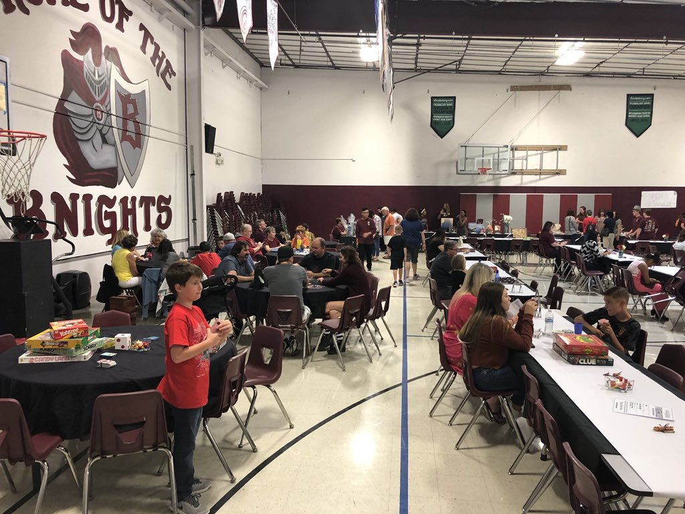
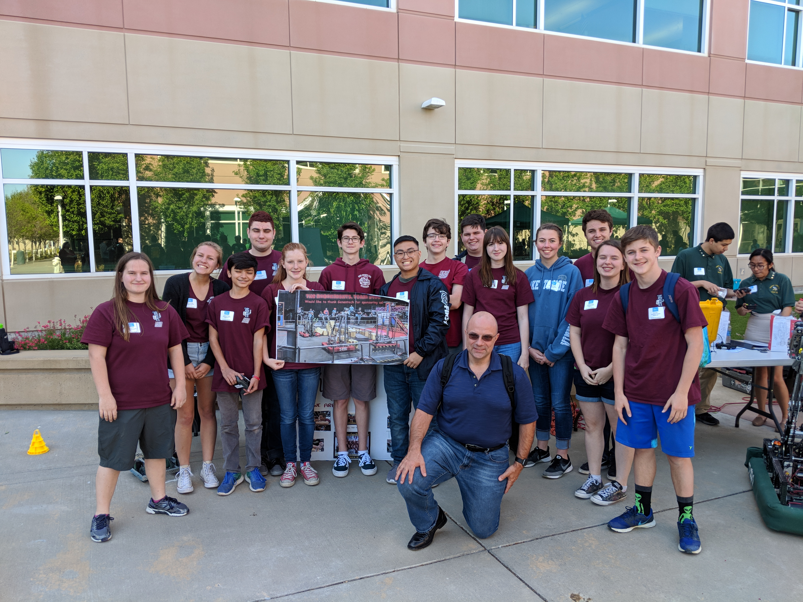
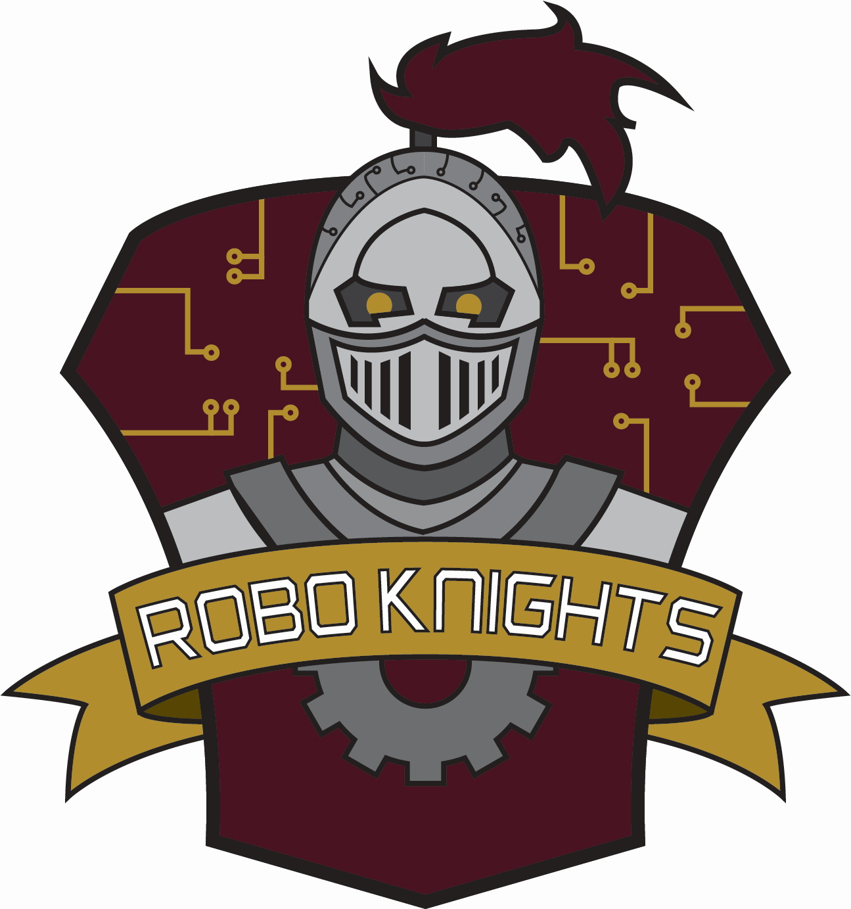

About PRB
The PRB department is a combination of PR and business. The PRB
departmentsupports the rest of the team by managing and raising
the team’s money, organising and participating in outreach and
community events, applying for awards, and managing the team’s
social media and website.
Fundraising
In order to raise money for the construction of our robots and
the entry fee for competitions, PRB organises fundraisers such as
spaghetti feeds, bake sales, and garage sales. Along with these
fundraisers, PRB also works to get sponsorships from various
companies to help fund the team.

Outreach & Community Events
PRB has organised and participated in several outreach events and
activities in recent years including mentoring two
FIRST Lego League (FLL)
teams and hosting two FLL tournaments. Along with outreach, PRB
has also participated in a variety of community events including
a robotics demonstration at an air show, the Genentech Bring Your
Kid To Work Day, and the Fiesta Days Parade.

Spirit & Logos
Each season, the PRB department designs new branding for the
team depending on that year’s game theme. This often includes
a new logo and new robotics clothing. PRB also organizes spirit
related activities at competitions although this usually involves
the entire team.
